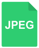

Растровая компьютерная графика. Форматы растровых изображений.
Изучите материал о растровой компьютерной графике и форматах растровых изображений. Чтобы перейти к учебному материалу, кликните на каждую из иконок.
Изучите материал о растровой компьютерной графике и форматах растровых изображений. Чтобы перейти к учебному материалу, кликните на каждую из иконок.

JPEG (Joint Photographic Experts Group) — один из самых популярных форматов. В нем представлены изображения на большинстве фотобанков. Он подходит для хранения картинки с плавными цветовыми переходами, например фотографий. В нем используется алгоритм частичного сжатия, который может давать артефакты (видимые искажения изображения) при резком контрасте, поэтому формат не применяется в работе с чертежами и схемами. JPEG не может содержать прозрачных пикселей. То есть даже если на изображении есть фигура на белом фоне, ее потребуется вырезать вручную в редакторе, отделив от фона.
png (Portable Network Graphics) — еще один популярный формат, в котором дизайнеры обычно сохраняют статичные изображения. В отличие от JPEG, в нем используется алгоритм сжатия без потерь. Это позволяет получить картинку лучшего качества, но при большем размере файла. Ценно то, что png поддерживает «прозрачные» пиксели. То есть при наличии «прозрачного» фона изображение можно использовать сразу, не проводя дополнительной обработки.
GIF (Graphics Interchange Format) — это формат не только анимированных, но и статичных изображений. Его главное преимущество — возможность создания простых анимаций с ограниченным количеством цветов (до 256).
Есть и менее известные форматы. Одни используются в цифровой съемке (.nef, .cr2, .crw), другие — в конкретных графических редакторах (например, .psd для Adobe Photoshop). Умение работать с растровыми изображениями необходимо для дизайнера независимо от его специализации: веб, полиграфия, геймдизайн и других.